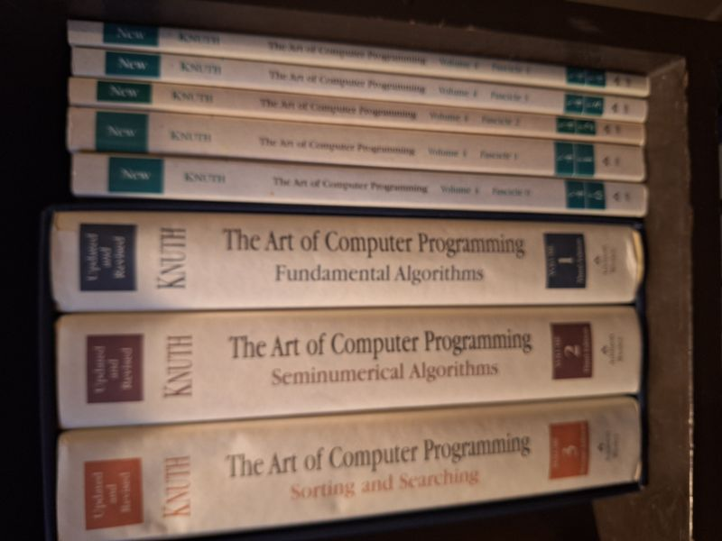

The Art of Computer Programming (3-volume boxed set + 5 Volume-4 fascicles)
Donald E. Knuth · Addison-Wesley, Boston, 1997

C$220 · Very Good condition
Details
- Publisher: Addison-Wesley, Boston, 1997
- Binding: Hardcover
- Edition: Vols 1-3 (3rd/3rd/2nd ed.), boxed set
- Condition: Very Good
- Dust jacket: Very Good
- ISBN: 9780201485417
- Category: Computing